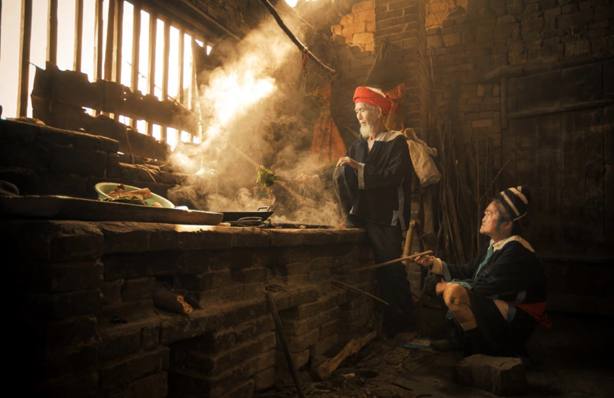
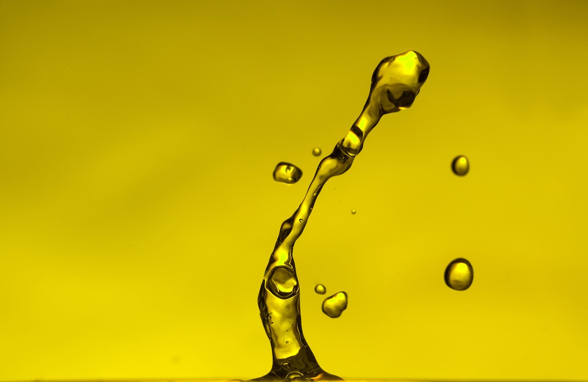
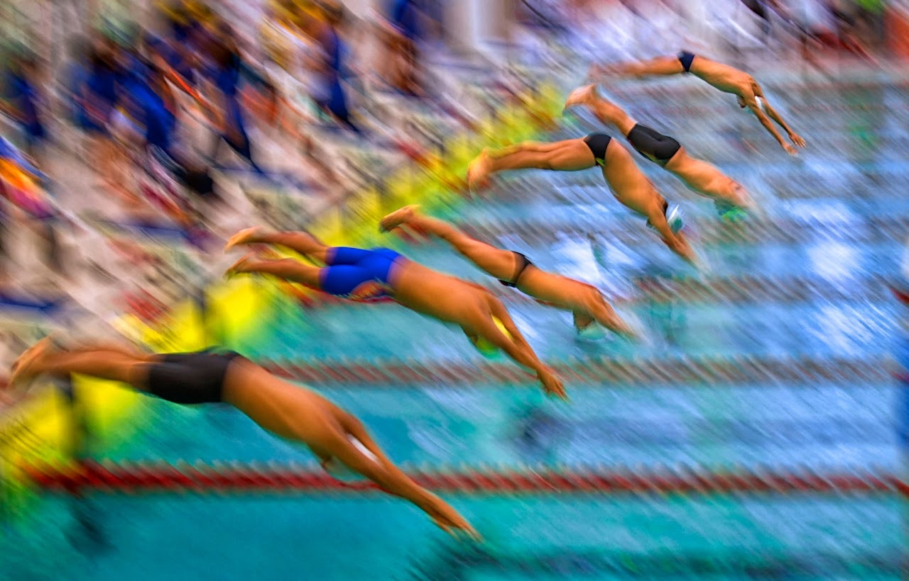
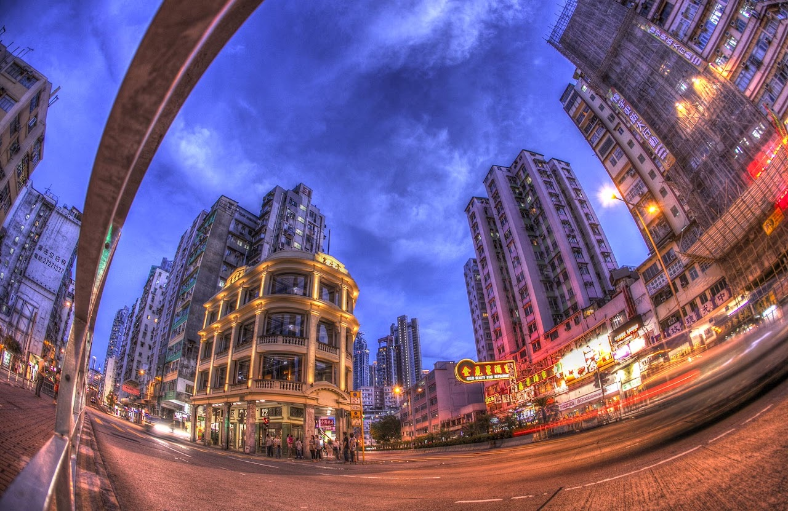
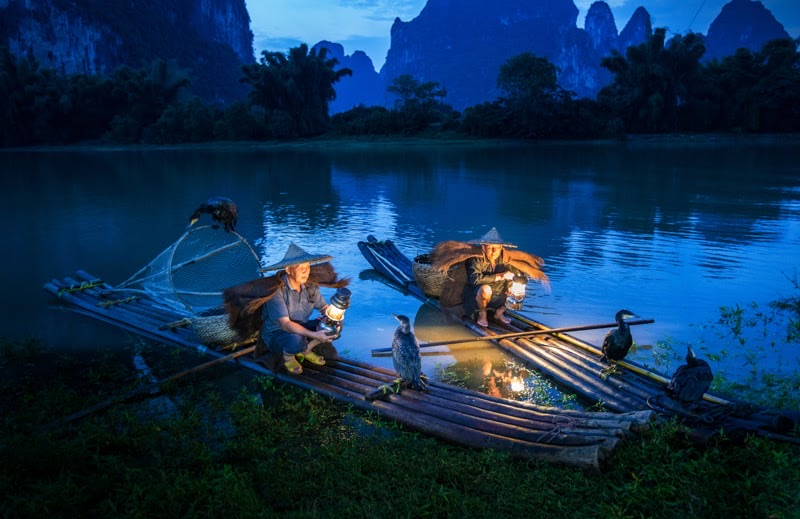
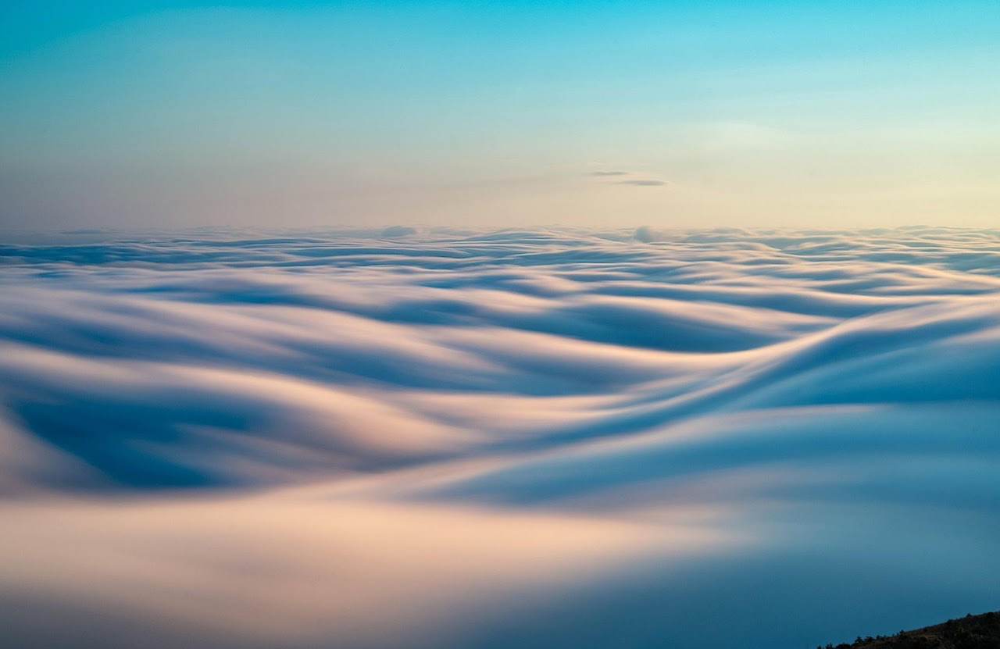
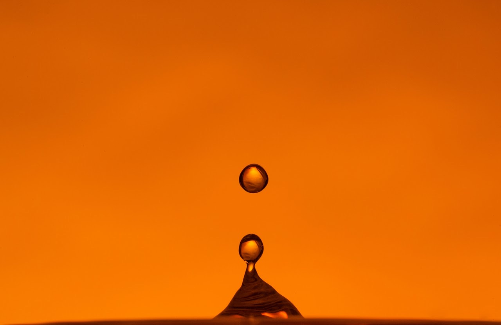

Horse Riding
Equestrian motion and Hong Kong racing culture rendered as compressed colour, speed, and force.
Hong Kong Fine Art Photographer
Official fine-art photography portfolio of Ricky Kwok, also known as Kwok Man Tai: ritual, city light, motion, and constructed impact transformed into images of charged time.
ARPS: Associate of The Royal Photographic Society.
Selected Works
Ritual, Collision, Motion, and City Light shape the portfolio. Each image is presented as a fine-art work with title, series context, and print information available on request.
Series
Each series has its own statement, artwork selection, award references, and print inquiry path.

Human scenes where gesture, smoke, lamp light, and laughter carry the gravity of lived tradition.

Water, powder, ash, and shell treated as sculptural material inside fractions of a second.

Sport translated into abstraction, rhythm, blur, and the visual pressure of speed.

Hong Kong as theatre: dense, reflective, electric, and always in motion.
Project Archive
Horse Riding, Travel, Nepal Documentary, and Infrared Hong Kong add thirty-three photographs from Ricky Kwok’s wider public archive.
Equestrian motion and Hong Kong racing culture rendered as compressed colour, speed, and force.

A broad travel and documentary sequence moving between labour, ritual, landscape, and rural theatre.

Portraits and daily scenes from Nepal, built around direct presence, family, work, and street life.

Hong Kong garden and temple architecture reimagined through infrared colour, warm stone, and pale foliage.
Recognition
Selected awardsRicky Kwok’s photographs have received more than 100 awards in Hong Kong and overseas. The homepage keeps only the strongest trust signals; the complete archive is listed separately.
Artist Statement
Ricky Kwok studies the moment when ordinary reality becomes unstable.
A river lamp becomes a stage light, a swimmer dissolves into colour, an urban signboard becomes environmental pressure, and a droplet becomes sculpture.
Moving between documentary observation and constructed studio experiments, Kwok treats time as physical material. His images are rooted in Hong Kong’s density, ritual life, and visual intensity, while extending into high-speed studies of water, ash, powder, and motion.

Available Prints
Selected works are prepared as archival pigment prints with edition information, sizes, certificates of authenticity, and shipping notes available on request.
Archival pigment print. Edition of 10 + 2 AP proposed. Price on request.
Water Study series. Edition of 12 + 2 AP proposed. Price on request.

Current Practice
Ricky is currently shaping documentary and high-speed works into a clearer fine-art archive, with attention to Hong Kong urban light, ritual memory, and constructed images of impact.
Portfolio updated July 2026.
Contact
Please include the artwork title, intended use, preferred print size, and location.
